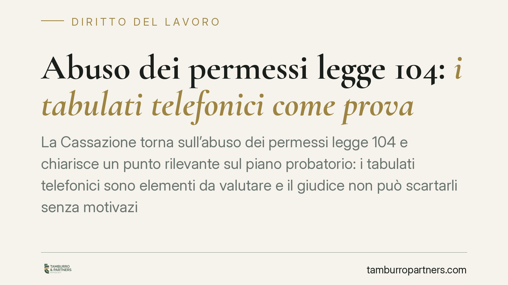

Abuso dei permessi legge 104: i tabulati telefonici come prova
La Cassazione torna sull'abuso dei permessi legge 104 e chiarisce un punto rilevante sul piano probatorio: i tabulati telefonici sono elementi da valutare e il giudice non può scartarli senza motivazione adeguata. Una pronuncia che incide sulla gestione dei contenziosi, ma che non introduce automatismi tra dato tecnico e prova dell'illecito.

Abuso permessi legge 104: cosa stabilisce la Cassazione
Il tema dell'abuso permessi legge 104 ritorna davanti alla Corte di Cassazione, questa volta sul terreno delle prove. Il principio è netto: il giudice che decide sulla legittimità di un licenziamento per uso distorto dei permessi deve valutare anche i tabulati telefonici prodotti dal datore di lavoro. Non può ignorarli né escluderli dal ragionamento senza spiegare perché.
La decisione (Cass. sez. lavoro, estremi n. .../anno — *dato da verificare in redazione prima della pubblicazione*) si colloca nel solco di un orientamento consolidato: il permesso ex L. 104/1992 è funzionale all'assistenza del familiare disabile. Chi lo utilizza per finalità diverse — attività personali, impegni non collegati alla cura — viola gli obblighi di correttezza e buona fede che governano il rapporto di lavoro.
Inquadramento normativo
Il riferimento è l'art. 33 della L. 104/1992, che riconosce i tre giorni mensili di permesso retribuito per l'assistenza. La fruizione fuori scopo si traduce in una violazione degli artt. 1175 e 1375 del codice civile, che impongono alle parti del rapporto obbligatorio di comportarsi secondo correttezza e buona fede.
Sul piano processuale entra in gioco l'art. 116 c.p.c., che affida al giudice la valutazione delle prove secondo il suo prudente apprezzamento. Proprio da qui discende il nodo risolto dalla Corte: il prudente apprezzamento non consente di accantonare un elemento istruttorio rilevante senza darne conto in motivazione. Scartare i tabulati "a priori" costituisce un vizio motivazionale censurabile.
Resta però il limite dell'utilizzabilità. I tabulati e, più in generale, i dati raccolti sul lavoratore devono rispettare l'art. 4 dello Statuto dei lavoratori (L. 300/1970) in tema di controlli a distanza e la disciplina sulla protezione dei dati personali (Regolamento UE 2016/679). Un dato acquisito in violazione di tali regole può risultare inutilizzabile, a prescindere dal suo contenuto.
Implicazioni pratiche
La portata della pronuncia va misurata con attenzione. Avere un tabulato che colloca il lavoratore in un luogo diverso da quello dell'assistenza non equivale alla prova dell'abuso. Il dato tecnico è un indizio, da leggere insieme agli altri elementi: orari, distanza, compatibilità con le esigenze di cura, eventuali spostamenti giustificati.
Non esiste quindi alcun automatismo. Il tabulato entra nel materiale probatorio, ma la decisione finale nasce da una valutazione complessiva. Allo stesso modo, il datore non può costruire la contestazione su un dato acquisito in modo irregolare: la solidità del licenziamento dipende tanto dal contenuto quanto dalla legittimità della raccolta.
Sul versante del lavoratore, l'uso improprio dei permessi può aprire profili ulteriori rispetto al rapporto con l'azienda. Quando la retribuzione dei permessi è anticipata o posta a carico dell'ente previdenziale, la fruizione distorta può integrare un'ipotesi di indebita percezione a danno dell'INPS. Si tratta di un profilo distinto, che va valutato caso per caso e non consegue in via automatica dal licenziamento disciplinare.
Cosa fare in concreto
Per il datore di lavoro:
- Verificate la legittimità di ogni elemento probatorio prima di contestarlo: un dato raccolto in violazione dell'art. 4 Statuto o della normativa privacy rischia di essere inutilizzabile.
- Documentate la contestazione in modo completo, affiancando ai tabulati altri riscontri oggettivi e coerenti.
- Evitate di fondare il provvedimento su un singolo indizio: ricostruite il quadro complessivo dell'uso del permesso.
Per il lavoratore:
- Utilizzate i permessi ex L. 104/1992 esclusivamente per l'assistenza al familiare, conservando prova degli spostamenti e delle attività di cura.
- Se ricevete una contestazione basata su tabulati, chiedete che ne venga verificata la regolarità di acquisizione.
- Valutate con assistenza qualificata i possibili profili ulteriori, incluso quello verso l'ente previdenziale.
Consigliamo, in entrambe le posizioni, di affrontare la fase istruttoria con un'analisi preventiva dei documenti: è lì che spesso si decide l'esito del contenzioso.
Disclaimer
Contributo informativo a cura di Tamburro & Partners Avvocati - Avv. Giuseppe Tamburro. Non costituisce parere legale.
Ogni storia di lavoro ha i suoi tempi.
Se gestisci HR e vuoi un confronto su contenzioso, ispezioni o licenziamenti, scrivi allo studio. Ti rispondiamo entro un giorno lavorativo.